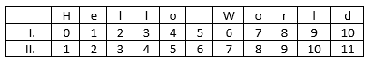
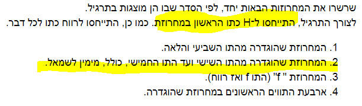

אפשר בבקשה להסביר מה צריך לעשות בתרגיל, לא כ"כ הבנתי…
יש לך את המחרוזת הנתונה.
אומרים לך לשרשר כל מיני פעולות על המחרוזת.
לשרשר זה אומר לחבר את כל הפעולות שאומרים לעשות על המחרוזת.
לדוגמא עבור המחרוזת “123456”
עבור הפעולות:
תיקח את האיברים ה-1 עד ה-3
תיקח את האיברים מהמקום ה-2 עד ה-4
תקבל את המחרוזת: “123234”
בהצלחה
לייק 1
אם הבנתי אותך נכון, צריך לצאת , ‘orldf Hell’, ולא נראה לי, אפשר הסבר ספציפי לתרגיל?
תקרא שוב את הוראות התרגיל כי זו לא התשובה.
ייצא לך בסוף משהו הגיוני.
אמרו שהאות h גדולה היא הראשונה. כלומר, הספירת אינדקסים שלך לא נכונה (שים לב שספירת אינדקסים מתחילה מ-0)
יצא לי World of Hell, זה?
התשובה אכן הגיונית.
שים לב שבמקרה הזה אכן כך יצא, אך אף אחד לא אמר שעבור כל המקרים תצא תשובה כזו
הכל טוב, אנחנו תומכים בפידבק, אבל מעדיפים שהוא יהיה בונה.
מוזמן להציע איך לשפר את הנוסח ומה אתה היית עושה לו אתה היית זה שבונה את התרגיל.
תודה 
לייק 1
אני לא הבנתי את סעיף 3,
המחרוזת "f " (התו f ואז רווח).
אין לי את האות f בhello הכוונה שאני מוסיף את הf בעצמי?
כן להוסיף בעצמך בשרשור החדש שאתה מייצר
לייק 1
היי ים אני גם לא הבנתי מה צריך לעשות בתרגיל כי כמבקשים ממני: “שרשרו את המחרוזות הבאות יחד” לא מסביר לי את השאלה אולי איזו דוגמא למה שמבקשים תגרום לי להבין…
חידוד לשאלה שלי: לפי איזה שיטה לספור 1 או 2? כאשר מהו האינדקס של H?

תודה
האינדקס שלh הוא 0 ממש כמו ברשימה
2 לייקים

יש לי שתי שאלות בקשר להבנת הנקרא של התרגיל:
- מה הכוונת במשפט: “לצורך התרגיל, התייחסו ל־H כתו הראשון במחרוזת”?
- סעיף 2 - “המחרוזת שהוגדרה מהתו השישי ועד התו החמישי, כולל, מימין לשמאל.” האם הכוונה לכולל התו השישי וכולל החמישי?
- הכוונה היא שבעוד שהמחשב מתייחס לתו H כתו באינדקס ה-0, אנחנו נתייחס אליו כתו הראשון במחרוזת (למשל, התו השלישי במחרוזת יהיה זה שהאינדקס שלו הוא 2)
- בהחלט כן
3 לייקים
היי ים,
הייתי מציעה את הנוסח הבא עבור dummies כמוני שלקח להם זמן להבין, למרות שההוראות לא מסובכות:
"לפניכם מחרוזת הנקראת hello. כל אחד מארבעת הסעיפים הבאים ייצור מחרוזת מתוך המחרוזת המקורית. שרשרו את המחרוזות שנוצרו לפי הסעיפים לכדי מחרוזת חדשה, שתניב משפט הגיוני.
לצורך התרגיל, התייחסו ל־H כתו הראשון במחרוזת (חשבו: איך זה שונה מהתפיסה הרגילה של פייתון?). כמו כן, התייחסו לרווח כתו לכל דבר.
- המחרוזת המקורית מהתו השביעי והלאה.
- המחרוזת המקורית מהתו השישי ועד התו החמישי, כולל, מימין לשמאל.
- המחרוזת "f " (התו f ואז רווח).
- ארבעת התווים הראשונים במחרוזת המקורית."
לייק 1
לקחתי. תודה!